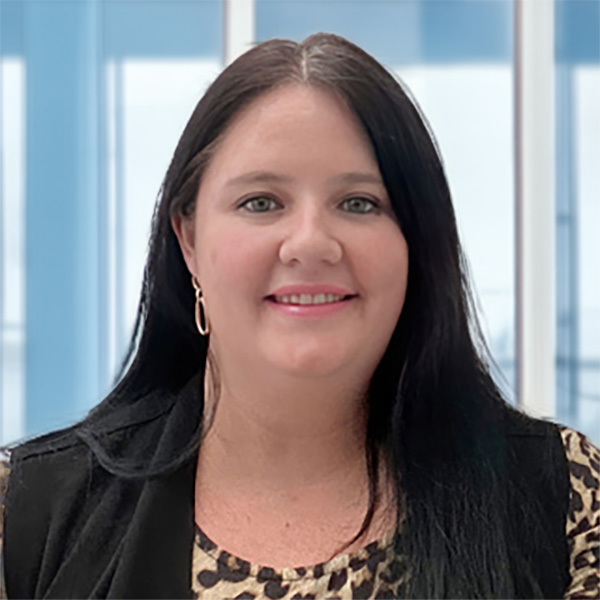

Our team began operations in Lima, Peru, in 2010. Since then, more than 300 clients have selected us as their Executive Search and Board Search partner.
We are members of the renowned InterSearch Worldwide network with over 90 offices globally, but first and foremost we are business consultants—former senior-level executives at multinational companies—dedicated to this practice as generalists. We serve all industries, with a strong focus on C-suite positions and Board of Directors, Advisory Board, and Corporate Governance roles.
Managing Partner
Independent director and consultant with over twenty-four years of experience in executive search, board member recruitment, and advisory board placement for both national and multinational corporations.
In Peru, he served as CEO of Compaq, Oracle Systems, NCR, and AT&T, as well as Vice President of Latin America for HA-EC Solutions at AT&T GIS. At NCR Corporation World Headquarters, he held the positions of Industrial Manager for Latin America, the Middle East, and Africa, and Sales Director for Northern Latin America.
He holds a Bachelor’s degree in Social Sciences–Economics from the Pontificia Universidad Católica del Perú, with postgraduate studies at Universidad de Piura-PAD, ESAN, and AT&T Management School, as well as the Directors Program by Ernst & Young / Universidad del Pacífico / PAD at Universidad de Piura.
Partner
Senior executive with extensive experience in financial services, banking, insurance, and related industries. MBA in International Business from ESAN University, and Bachelor’s degrees in Business Administration and Tourism Administration from Johnson & Wales University in Providence, Rhode Island, USA.
He holds a Diploma in General Insurance from the Executive Education program at Pacífico Business School and has completed the Instituto de Directores programs at EY Peru with Universidad Adolfo Ibáñez for Independent Directors and Managing Directors.
Prior to joining as Partner, he was a Partner at another international executive search firm and Executive Director of Corporate Governance and Sustainability at EY Peru. He served as CEO and Partner of Macro Wealth Management, a Multi-Family Office of the Macroconsult Group. He also held the position of Director of Wealth Management at BTG Pactual Peru and Corporate Manager at Pacífico Seguros y Reaseguros, part of the Credicorp Group.
He was Sales and Investment Manager of Citigold Wealth Management at Citibank Peru and Senior Business Executive at Interbank Private Banking of the Intercorp Group. He has served as a Director at IPAE and on the Advisory Board of Tracklink Peru, and is a member of the Finance Committee of the British School Association.

Senior Consultant
Senior consultant in executive search, with a Bachelor’s degree in Communications and Journalism from UPC. She has over 15 years of professional experience in leading consumer goods and education companies.
For the past 10 years, she has been dedicated to executive recruitment and selection. Fernanda brings extensive multi-sector experience and leads the firm’s research team.